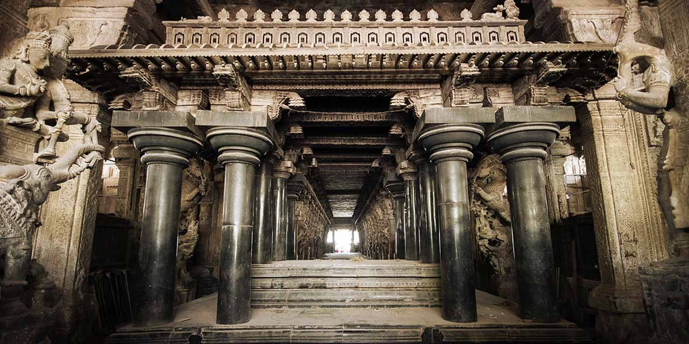

History and Growth of Madurai
Madurai is one of the ancient cities of South India with a glorious history. It is famous for its world acclaimed Meenakshi Sundareswarar Temple. The city of Madurai has been constructed in the form of a lotus and is built around the temple.Madurai is known as Athens of the East and a place of great historical and cultural importance. It was originally known as Kadambavanam or the "forest of Kadamba" or the Nauclea Kadamba. Madurai is home to several historic temples, monuments, churches and mosques. It is a pilgrimage centre and gateway to south Tamil Nadu having the world famous Sri Meenakshi Amman Temple at its core. In 1801, Madurai came under the direct control of the British East India Company and was annexed to the Madras Presidency. The city evolved as a political and industrial complex through the 19th and 20th centuries to become a district headquarters of a larger Madurai district.
Madurai is a major city in the state of Tamil Nadu in southern India. It is the administrative headquarters of Madurai District. Madurai is the second largest corporation city by area and third largest city by population in Tamil Nadu. Located on the banks of River Vaigai, Madurai has been a major settlement for two millennia and is one of the oldest continuously inhabited cities in the world. Madurai is closely associated with the Tamil language, as all three primary congregations of Tamil scholars, the Third Tamil Sangams, were held in the city between 1780 BCE and the 3rd century CE. The recorded history of the city goes back to the 3rd century BCE, being mentioned by Megasthenes, the Greek ambassador to India, and Kautilya, a minister of the Mauryan emperor Chandragupta Maurya.

Madurai has been inhabited since at least the 3rd century. Megasthenes may have visited Madurai during the 3rd century BCE, with the city referred as "Methora" in his accounts. Madurai is also mentioned in Kautilya's Arthashastra.Madurai as a capital city of the Pandyan dynasty. Jalaluddin Ahsan Khan was the first ruler of the Sultanate of Madurai. After the Sangam age, most of present-day Tamil Nadu, including Madurai, came under the rule of the Kalabhra dynasty, which was ousted by the Pandyas. The Pandyas were outsted from Madurai by the Chola dynasty during the early 9th century.The city remained under the control of the Cholas until the early 13th century, when the second Pandyan empire was established with Madurai as its capital.
The city has a number of historical monuments, with the Meenakshi Amman Temple and Tirumalai Nayak Palace being the most prominent. Madurai is an important industrial and educational hub in South Tamil Nadu. The city is home to various automobile, rubber, chemical, hand loom textiles and granite manufacturing industries. It has developed as a second-tier city for information technology (IT), and some software companies have opened offices in Madurai. Tamil Nadu government planned satellite town for Madurai near Thoppur. Madurai has important government educational institutes like the Madurai Medical College, Homeopathic Medical College, Madurai Law College, Agricultural College and Research Institute. Madurai city is administered by a municipal corporation established in 1971 as per the Municipal Corporation Act.The city is also the seat of a bench of the Madras High Court, one of only a few courts outside the state capitals of India.
Etymology
The city is referred by various names like "Madurai", "Koodal", "Naanmadakoodal" and "Thirualavai". The word Madurai is derived from Madhura (sweetness) arising out of the divine nectar showered on the city by the Hindu god Shiva from his matted hair. Another theory is that Madurai is the derivative of the word Marutham, which refers to the type of landscape of the Sangam age. There is a town in the neighbouring Dindigul district called Vada Madurai (North Madurai) and another in Sivagangai district called Manamadurai. The different names by which the city has been referred to historically are listed in the 7th century poem Thiruvilayaadal puraanam written by Paranjothi Munivar.
Story of Madurai
It is narrated in legend that Madurai was originally a forest known as Kadambavanam. One day, a farmer named Dhananjaya who was passing through the forest, saw Indra (The king of the gods), worshipping a swayambhu (self created Lingam ) under kadamba tree. Dhananjaya, the farmer immediately reported this to King Kulasekara Pandya. Kulasekara Pandya cleared the forest and built a temple around the Lingam. A city was soon planned with the temple as its centre. On the day the city was to be named, Lord Shiva is said to have appeared and drops of nectar from his hair fell on the town. So, the place was named Madurai – mathuram meaning “sweetness” in Tamil.
Madurai has a rich historical background in the sense that Lord Shiva himself performed sixty-four wonders called“Thiruvilaiyadals” .As early as the 3rd century BC, Megasthanes visited Madurai. Later many people from Rome and Greece visited Madurai and established trade with the Pandya kings. Madurai flourished till 10th century AD when it was captured by Cholas the arch rivals of the Pandyas.The Cholas ruled Madurai from 920 AD till the beginning of the 13th century. In 1223 AD Pandyas regained their kingdom and once again become prosperous. Pandian Kings patronised Tamil language in a great way. During their period, many master-pieces were created. “Silapathikaram”, the great epic in Tamil was written based on the story of Kannagi who burnt Madurai as a result of the injustice caused to her husband Kovalan. In April 1311, Malik Kafur, the general of Alauddin Khilji who was then the ruler of Delhi, reached Madurai and raided and robbed the city for precious stones, jewels, and other rare treasures. This led to the subsequent raids by other Muslim Sultans. In 1323, the Pandya kingdom including Madurai became a province of the Delhi empire, under the Tughlaks.
The 1371, the Vijayanagar dynasty of Hampi captured Madurai and Madurai became part of the Vijayanagar empire. Kings of this dynasty were in habit of leaving the captured land to governors called Nayaks. This was done for the efficient management of their empire. The Nayaks paid fixed amount annually to the Vijayanagar empire. After the death of Krishna Deva Raya (King of Vijayanagar empire) in 1530 AD, the Nayaks became independent and ruled the territories under their control.
Among Nayaks, Thirumalai Nayak (1623-1659) was very popular, even now he is popular among people, since, it was he who contributed to the creation of many magnificent structures in and around Madurai and expanded the city. Thirumalai Nayak, built Nayak Palace in 1636 with the help of an Italian Architect. The Raja Gopuram of the Meenakshi Amman Temple, The Pudu Mandapam and The Thirumalai Nayakar’s Palace are living monuments to his artistic fervor.
Nayaks ruled over Madurai and became weak after the death of Tirumalai Nayak. Then Queen Mangamma, a brave lady ruled Madurai for 17 years. Few years later Madurai rulers tried to rule Madurai and they were ineffective because British and French people laid their foot strongly in the region. Madurai started slipping into the hands of the British’s East India Company. In 1781, the British rulers appointed their representatives to look after Madurai.George Procter was the first collector of Madurai. Now after India’s independence, Madurai is one of the major districts of Tamilnadu State. In 1984, the Vast Madurai district was bifurcated into two districts namely Madurai and Dindugul Districts. Subsequently in 1997, Madurai district was bifurcated into two districts namely Madurai and Theni Districts. In Madurai District, there are 10 State Assembly constituencies and two parliament constituencies. Madurai is surrounded by several mountains. The Madurai city has 3 hills as its city boundary. Yanaimalai, Nagamalai, Pasumalai named after Elephant, Snake and Cow respectively. It is famous for Jasmine Flowers. Jasmine flowers are transported to other cities of India from Madurai.
Demography
HIGHLIGHTS OF THE DISTRICT – 2011 CENSUS
Madurai district ranked 9th in terms of the highest population among the districts.
The district urban population was 60.8%.
The population density of the district was 819 persons/sq km.
The decadal population growth in the district during 2001 – 2011 was 17.8%.
The city covers an area of 147.99 km2 and had a population of 1470755 in 2011.
Famous Places in Madurai
Madurai is famous for its temples built by Pandyan and Madurai Nayak kings in the Dravidian style of architecture.It is also one of India's most outstanding Hindu pilgrimage centres.Madurai is famous for Meenakshi Amman Temple,Thirumalai Nayak Mahal,Teppakulam,Gandhi Museum,and Azhagar Kovil.